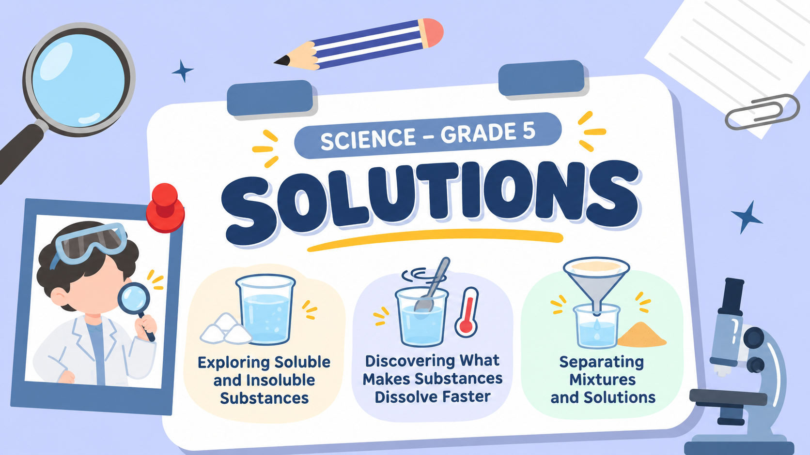

TRUE OR FALSE QUIZ KUIS BENAR ATAU SALAH
Soluble and Insoluble Substances Zat yang Larut dan Tidak Larut
Read each statement and decide whether it is TRUE or FALSE.
Bacalah setiap pernyataan dan tentukan apakah BENAR atau SALAH.
Gambar slide tidak bisa dimuat. Periksa file di folder slides.
← → pindah slide · F layar penuh · Geser di HP